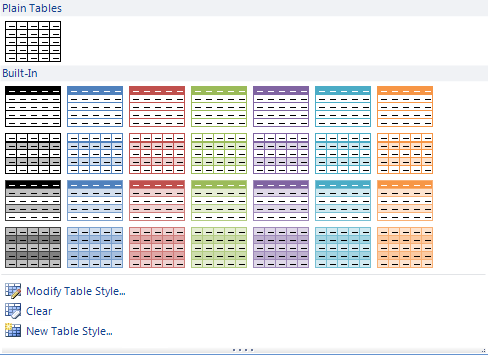

Creating a Gallery
RadGalleryElement allows the user to choose among large number of visual items. In its default collapsed view,
a gallery shows a single row of its items, as well as an up arrow and a down arrow that scroll to other rows of items.
Special properties allow you to specify the number of visible rows and columns of items in the collapsed view.

The gallery also has a drop-down arrow which sets the element into expanded view. In this view the gallery shows a popup containing all of its items, organized in groups.
Creating a Gallery
To create a gallery, first, select a RadRibbonbar group, click its smart tag, and choose the
Edit Items option. When the RadItem Collection Editor *pops up,
click the arrow of the Add button and select the *RadGalleryElement option.
Click OK to save the changes and the gallery should appear in your ribbon group.
Gallery properties
MaxColumns – the property specifies the number of columns to appear in the gallery in its collapsed view.
MaxRows – the property sets the number of rows to be shown in the gallery in its collapsed view
MaxDropDownColumns – the property assigns the maximum number of columns that may appear in the gallery drop-down
MinDropDownColumns – the property sets the minimum number of columns to be displayed in the gallery drop-down
Adding Items
You can add items to the gallery at design-time using the following steps:
Select the RadGalleryElement control.
Go to the Properties window and navigate to the Items property, then click the ellipsis button
In the RadItem Collection Editor, click the Add button and a RadGalleryItem will appear
Use the property sheet to set the text and image properties of the newly created RadGalleryItem
Click the OK button to save the changes
Alternatively, you can add the items at run-time. Here is a sample snippet:
__[C#] __
RadGalleryItem blueItem1 = new RadGalleryItem("", Properties.Resources.RibbonBar_GettingStarted_CreatingAGallery001);
RadGalleryItem blueItem2 = new RadGalleryItem("", Properties.Resources.RibbonBar_GettingStarted_CreatingAGallery002);
RadGalleryItem blueItem3 = new RadGalleryItem("", Properties.Resources.RibbonBar_GettingStarted_CreatingAGallery003);
RadGalleryItem blueItem4 = new RadGalleryItem("", Properties.Resources.RibbonBar_GettingStarted_CreatingAGallery004);
RadGalleryItem purpleItem1 = new RadGalleryItem("", Properties.Resources.RibbonBar_GettingStarted_CreatingAGallery005);
RadGalleryItem purpleItem2 = new RadGalleryItem("", Properties.Resources.RibbonBar_GettingStarted_CreatingAGallery006);
RadGalleryItem purpleItem3 = new RadGalleryItem("", Properties.Resources.RibbonBar_GettingStarted_CreatingAGallery007);
RadGalleryItem purpleItem4 = new RadGalleryItem("", Properties.Resources.RibbonBar_GettingStarted_CreatingAGallery008);
RadGalleryItem greenItem1 = new RadGalleryItem("", Properties.Resources.RibbonBar_GettingStarted_CreatingAGallery009);
RadGalleryItem greenItem2 = new RadGalleryItem("", Properties.Resources.RibbonBar_GettingStarted_CreatingAGallery010);
RadGalleryItem greenItem3 = new RadGalleryItem("", Properties.Resources.RibbonBar_GettingStarted_CreatingAGallery011);
RadGalleryItem greenItem4 = new RadGalleryItem("", Properties.Resources.RibbonBar_GettingStarted_CreatingAGallery012);
this.radGalleryElement1.Items.AddRange( blueItem1, blueItem2, blueItem3, blueItem4,
greenItem1, greenItem2, greenItem3, greenItem4,
purpleItem1, purpleItem2, purpleItem3, purpleItem4);
__[VB.NET] __
Dim blueItem1 As New RadGalleryItem("", My.Resources.RibbonBar_GettingStarted_CreatingAGallery001)
Dim blueItem2 As New RadGalleryItem("", My.Resources.RibbonBar_GettingStarted_CreatingAGallery002)
Dim blueItem3 As New RadGalleryItem("", My.Resources.RibbonBar_GettingStarted_CreatingAGallery003)
Dim blueItem4 As New RadGalleryItem("", My.Resources.RibbonBar_GettingStarted_CreatingAGallery004)
Dim purpleItem1 As New RadGalleryItem("", My.Resources.RibbonBar_GettingStarted_CreatingAGallery005)
Dim purpleItem2 As New RadGalleryItem("", My.Resources.RibbonBar_GettingStarted_CreatingAGallery006)
Dim purpleItem3 As New RadGalleryItem("", My.Resources.RibbonBar_GettingStarted_CreatingAGallery007)
Dim purpleItem4 As New RadGalleryItem("", My.Resources.RibbonBar_GettingStarted_CreatingAGallery008)
Dim greenItem1 As New RadGalleryItem("", My.Resources.RibbonBar_GettingStarted_CreatingAGallery009)
Dim greenItem2 As New RadGalleryItem("", My.Resources.RibbonBar_GettingStarted_CreatingAGallery010)
Dim greenItem3 As New RadGalleryItem("", My.Resources.RibbonBar_GettingStarted_CreatingAGallery011)
Dim greenItem4 As New RadGalleryItem("", My.Resources.RibbonBar_GettingStarted_CreatingAGallery012)
Me.RadGalleryElement1.Items.AddRange(blueItem1, blueItem2, blueItem3, blueItem4, greenItem1, greenItem2, _
greenItem3, greenItem4, purpleItem1, purpleItem2, purpleItem3, purpleItem4)
Adding Groups
Groups organize the items within a gallery into distinct sections. Groups are not visible when
the gallery is in collapsed view. They appear in the gallery popup as blocks of items under
the same title. For example, in the screenshot above the Plain Tables and Built-In are the
titles of gallery groups. The Plain Tables group contains a single item and the Built-In group
contains plenty. The following screenshot has six groups: Black Items, Blue Items, Red Items,
Green Items, Purple Items, Orange Items.

To add a group at design-time, please follow these steps:
Select the RadGalleryElement
Go to the Properties windows and navigate to the Groups property, then click the ellipsis button
In the RadItem Collection Editor click the Add button and a new RadGalleryGroupItem will appear in the dialog
Set the Text property of the newly created group
Navigate to its Items property and click the ellipsis button
When the Items Collection Editor opens you can choose which RadGalleryItems to be associated with this group.
Each time you click Add, one of the items that you already created will be added to the group. Click Remove to exclude items from the group.Click OK to save the group items
Click OK to save the group
Alternatively, you can add the items at run-time. Here is a sample snippet:
__[C#] __
RadGalleryGroupItem blueGroup = new RadGalleryGroupItem();
blueGroup.Text = "Blue Items Group";
blueGroup.Items.AddRange(blueItem1, blueItem2, blueItem3, blueItem4);
this.radGalleryElement1.Groups.Add(blueGroup);
RadGalleryGroupItem greenGroup = new RadGalleryGroupItem();
greenGroup.Text = "Green Items Group";
greenGroup.Items.AddRange(greenItem1, greenItem2, greenItem3, greenItem4);
this.radGalleryElement1.Groups.Add(greenGroup);
RadGalleryGroupItem purpleGroup = new RadGalleryGroupItem();
purpleGroup.Text = "Purple Items Group";
purpleGroup.Items.AddRange(purpleItem1, purpleItem2, purpleItem3, purpleItem4);
this.radGalleryElement1.Groups.Add(purpleGroup);
__[VB.NET] __
Dim blueGroup As New RadGalleryGroupItem()
blueGroup.Text = "Blue Items Group"
blueGroup.Items.AddRange(blueItem1, blueItem2, blueItem3, blueItem4)
Me.RadGalleryElement1.Groups.Add(blueGroup)
Dim greenGroup As New RadGalleryGroupItem()
greenGroup.Text = "Green Items Group"
greenGroup.Items.AddRange(greenItem1, greenItem2, greenItem3, greenItem4)
Me.RadGalleryElement1.Groups.Add(greenGroup)
Dim purpleGroup As New RadGalleryGroupItem()
purpleGroup.Text = "Purple Items Group"
purpleGroup.Items.AddRange(purpleItem1, purpleItem2, purpleItem3, purpleItem4)
Me.RadGalleryElement1.Groups.Add(purpleGroup)
Creating Filters
A gallery filter is a set of groups. Filters appear as options of a drop-down list,
docked at the top of the gallery popup. They allow the user to choose the combination
of groups to be displayed in the popup. For example, the following screenshot contains
three filters. The All filter displays all groups; the Red, Orange and Green Items filter
shows the items in groups Red, Orange and Green; the Blue and Purple Items lists the items
in the Blue and Purple groups.
|  |  |  |
To create a filter, follow these steps:
Select the RadGalleryElement
Go to the Properties window, navigate to the Filters property, and click the ellipsis button
In the RadItem Collection Editor click the Add button and a new filter will appear in the dialog
Set the Text property of the newly created filter
Navigate to the Items property of the RadGalleryGroupFilter, then click the ellipsis button
When the Items Collection Editor opens you can choose which RadGalleryGroupItems to be associated with this filter.
Each time you click Add, one of the groups that you already created will be added to the filter. Click Remove to exclude groups from the filter.
Note that one group can be assigned to more than one filtersClick OK to save the filter items
Click OK to save the filter
Alternatively, you can create a filter at run-time. Here is a sample snippet:
__[C#] __
RadGalleryGroupFilter all = new RadGalleryGroupFilter();
all.Text = "All Groups";
all.Items.AddRange(blueGroup, greenGroup, purpleGroup);
this.radGalleryElement1.Filters.Add(all);
RadGalleryGroupFilter blueGreenFilter = new RadGalleryGroupFilter();
blueGreenFilter.Text = "Blue and Green Groups";
blueGreenFilter.Items.Add(blueGroup);
blueGreenFilter.Items.Add(greenGroup);
this.radGalleryElement1.Filters.Add(blueGreenFilter);
RadGalleryGroupFilter greenPurpleFilter = new RadGalleryGroupFilter();
greenPurpleFilter.Text = "Green and Purple Groups";
greenPurpleFilter.Items.Add(greenGroup);
greenPurpleFilter.Items.Add(purpleGroup);
this.radGalleryElement1.Filters.Add(greenPurpleFilter);
__[VB.NET] __
Dim all As New RadGalleryGroupFilter()
all.Text = "All Groups"
all.Items.AddRange(blueGroup, greenGroup, purpleGroup)
Me.RadGalleryElement1.Filters.Add(all)
Dim blueGreenFilter As New RadGalleryGroupFilter()
blueGreenFilter.Text = "Blue and Green Groups"
blueGreenFilter.Items.Add(blueGroup)
blueGreenFilter.Items.Add(greenGroup)
Me.RadGalleryElement1.Filters.Add(blueGreenFilter)
Dim greenPurpleFilter As New RadGalleryGroupFilter()
greenPurpleFilter.Text = "Green and Purple Groups"
greenPurpleFilter.Items.Add(greenGroup)
greenPurpleFilter.Items.Add(purpleGroup)
Me.RadGalleryElement1.Filters.Add(greenPurpleFilter)
Creating Tools
Tools are items that appear in the popup beneath the groups. They do not belong to groups and are always displayed, regardless of the applied filter.
To add a Tool at design-time please follow these steps:
Select the RadGalleryElement
Go to the Properties window, navigate to the Tools property, and click the ellipsis button
In the RadItem Collection Editor click the Add button to add an item.
Currently, you can add a RadMenuItem, RadMenuButtonItem and RadMenuComboItemUse the Properties window to set the properties of the new tool
Click OK to save the changes
You can also create tools at run-time. Here is a sample snippet:
__[C#] __
RadMenuButtonItem buttonItem = new RadMenuButtonItem("Click me!");
this.radGalleryElement1.Tools.Add(buttonItem);
__[VB.NET] __
Dim buttonItem As New RadMenuButtonItem("Click me!")
Me.RadGalleryElement1.Tools.Add(buttonItem)